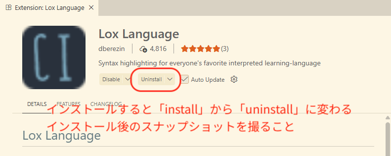
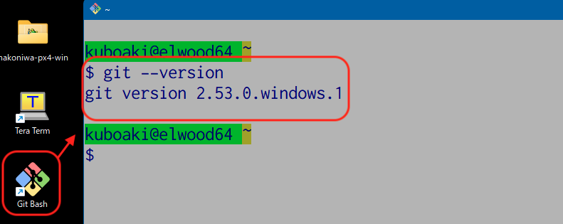
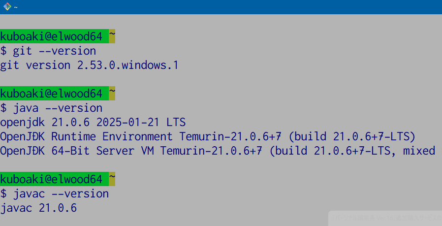
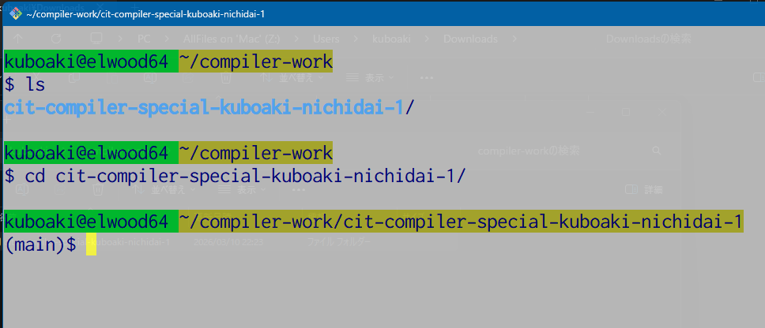
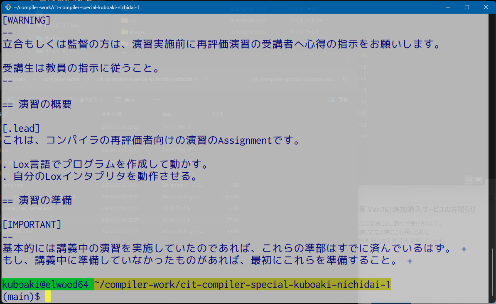
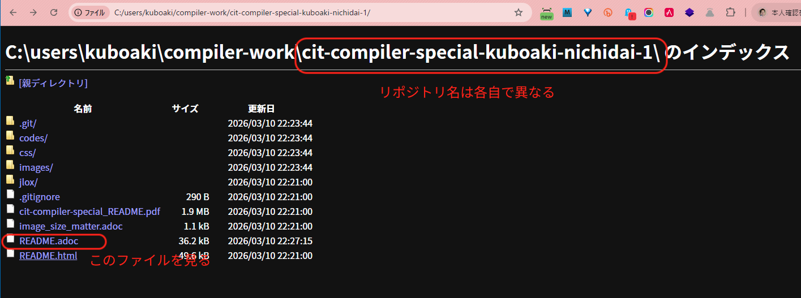
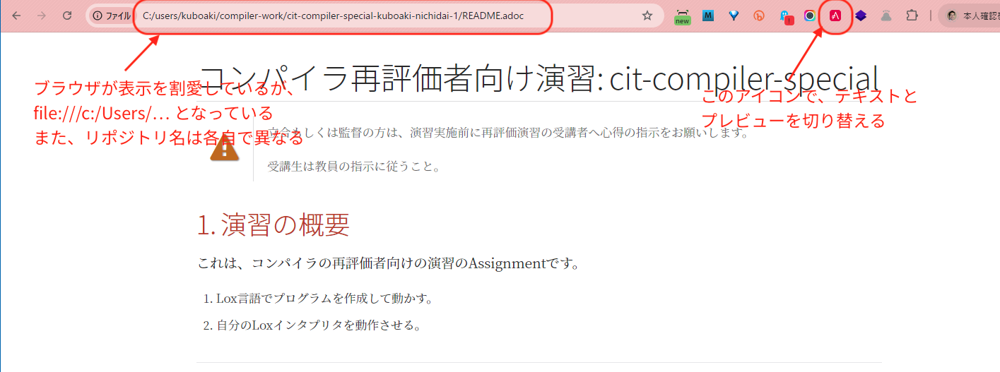
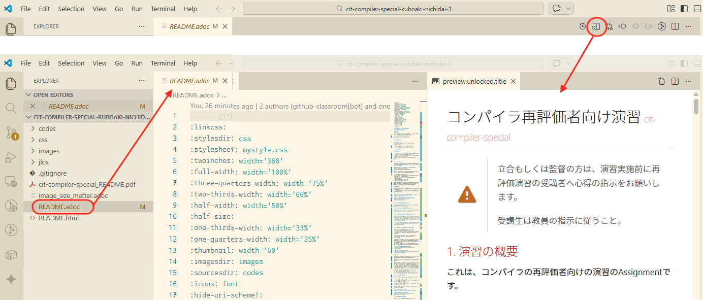
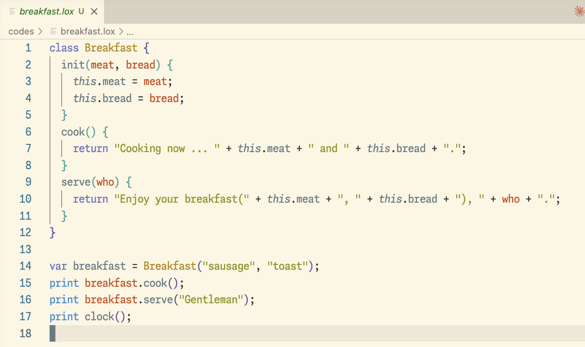
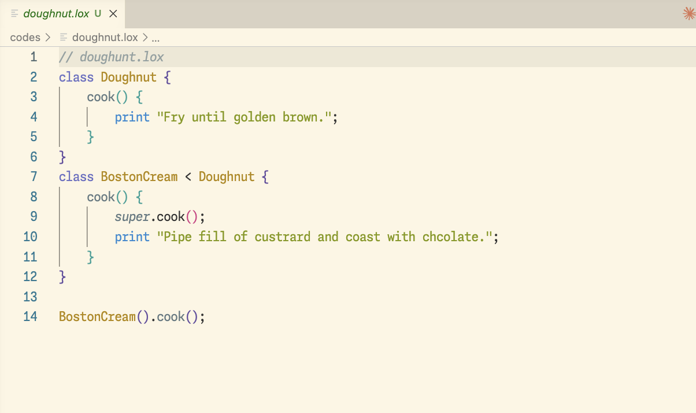

|
立合もしくは監督の方は、演習実施前に再評価演習の受講者へ心得の指示をお願いします。 受講生は教員の指示に従うこと。 |
1. 演習の概要
これは、コンパイラの再評価者向けの演習のAssignmentです。
-
Lox言語でプログラムを作成して動かす。
-
自分のLoxインタプリタを動作させる。
2. 演習の準備
|
基本的には講義中の演習を実施していたのであれば、これらの準部はすでに済んでいるはず。 |
2.1. 参照する資料
演習の進め方や、Assignmentの受け取り方、必要なソフトウェア等については、Boxフォルダで配布した次の文書を参照のこと。
- コンパイラの講義用Boxフォルダの共有リンク
| 上記リンクは「リンクを知っている全員・表示およびダウンロード可能」となっている。 |
-
「コンパイラ」の講義資料
-
asciidocプラグインの設定.pdf（Chromeブラウザ用、Visual Studio Code用）
-
GitHub_Classroom_Assignmentの受け取り方_20260122
-
gitコマンドの使い方.pdf
-
github-git-cheat-sheet.pdf
| いちいちBoxのファイルを開いていては手間がかかるので、いったんデスクトップなどにダウンロードし、オフラインでも参照可能にしておくこと。 |
|
もし、Boxドライブが閲覧できないようなら、共有申請すること。 |
- Crafting Interpreters のウエブサイト
- Crafting Interpreters のGitHubリポジトリ
2.2. ソフトウェアのインストール
下記のソフトウェアを使用する。未設定なものがあれば、インストールすること。
2.2.1. Visual Studio Code（VS Code）
2.2.2. VS Codeのファイルエンコーディング設定
Windows版のVS Codeでは、テキストファイルのエンコーディング指定が MS932あるいはShift-JISとなっている場合がある。本演習では、読む・書くともにUTF-8を使うことにするので、あらかじめエンコーディング設定を変更しておくこと。
- VS Codeでエンコーディングを変更、自動判別するには
-
https://atmarkit.itmedia.co.jp/ait/articles/1806/01/news051.html
2.2.3. VS Code 機能拡張（プラグイン）の追加
-
Java用の機能拡張をインストールする。
-
Lox用の機能拡張をインストールする。
-
Lox用機能拡張も、Visual Studio Codeの機能拡張メニューから追加できる。詳しくは、下記Wikiを参照のこと。
- VS Code Lox Language
-
https://marketplace.visualstudio.com/items?itemName=dberezin.lox-language
-
-
インストールできたら、結果のわかるスナップを取得し、下記画像をそのスナップで置き換えなさい。
-
imagesディレクトリにあるlox-language-plugin-installed.pngを上書き保存する。
-
| 後でプレビューを確認する。そのときに、下記のダミー画像が、自分の撮ったスナップに置き換わっていることを確認すること。 |


スナップ（スクリーンショット）の撮り方は、次のページを参考にしなさい。
- Windowsのスクリーンショットを撮る4つの方法
2.2.4. Git
ここでの説明はWindows PCに、*「Git for Windows」*をインストールすることを想定している。
MacやWSL2上のGitを使う場合には、その方法に従うこと。
このAssingmentでは、この後、各所の操作説明等において、Git for Windows のインストーラを実行中に追加した Git Bash を使うことを想定している。
もし、WSL2上のUbuntuや、MinGWまたはMSYS2のBashを使う、MacでZshを使うといった場合には、適宜読み替えて、自分の演習環境用の Git を用意すること。
-
次のページを参照して、インストールする。
-
わからないときは、次のページを参考にする。
2.2.5. Git Bashの動作確認
Gitコマンドが利用可能になっているか確認する。
-
Git Bashを実行する。-
MSYS2やWSL2の人は、代わりに自分が演習で使うターミナルで実行すること。
-
-
git --versionを実行する。-
git verion 2.49.0.windows.1などバージョン番号が表示されればよい。
-
ここでも、実行結果のスナップを撮って、下記の画像を置き換えなさい。


2.2.6. Java開発環境（JDK）
Oracle JDKまたはOpenJDKをインストールする
-
次のページを参照して、インストールする。
-
VS Codeを使う人は下記を参照してプラグインを導入するとよい。
インストールできたか確認する。
|
古いJDKやJREが入っていると、演習のプログラムが 「コンパイルできない・動作しない」 といったことが起きる。 |
$ java --version (1)
openjdk 21.0,6 2025-01-21 LTS (2)
（略）
#javac --version (3)
javac 21.0.6 (4)| 1 | java コマンドは、Javaのコンパイル済みプログラム（ .class や .jar ファイル）を指定して実行するインタプリタ。 --version オプションでバージョンを表示している。 |
| 2 | 自分がインストールしたJDKのバージョンと一致するか確認する。 |
| 3 | javac コマンドは、Javaのソースコード( .java ファイル）のコンパイラ。 --version オプションでバージョンを表示している。 |
| 4 | 自分がインストールしたJDKのバージョンと一致するか確認する。 |
ここでも、実行結果のスナップを撮って、下記の画像を置き換えなさい。


2.2.7. Git Bashの設定
-
Windowsのタスクバーのスタートメニューの検索欄に「Git Bash」を入力して検索する。
-
ポップアップしたスタートアップメニューのアプリ欄に表示される「Git Bash」をクリックして起動する。
-
Git Bashのターミナルが表示される。
-
ターミナルの左上のアイコンをクリックし、ポップアップメニューを表示する。
-
ポップアップしたメニューから「Options」をクリックして、Optionsダイアログを表示する。
-
左の「Looks」欄を選択し、右に表示された項目の「Theme」で「luminous」など、背景が明るいテーマから好みのものを選択する。
-
左の「Text」欄を選択し、右に表示された項目の「Font」で「Select」ボタンをクリックし、日本語のフォントを選択、フォントサイズを少し大きめ（14ptから20pt程度）に変更する。
-
右下の「Save」ボタンをクリックして設定を保存する。
|
下記実行例の ターミナルのプロンプトは、実行する環境によって少しずつ異なる。 たとえば、ある環境では、実際に表示されてるプロンプトは、
のようになっていた。 |
kuboaki@elwood64 ~
$ cd /c/Users/uboaki/Desktop/ (1)
kuboaki@elwood64 ~/Desktop
$ pwd (2)
/c/Users/kuboaki/Desktop (3)
kuboaki@elwood64 ~/Desktop
$ ls (4)
ImDiskTk-x64/ 'Tera Term.lnk'* desktop.ini
'Shin - Chrome.lnk'* astah_sysml.lic hakoniwa-px4-win/ (5)| 1 | cd はディレクトリの移動コマンド。この例では、 c がドライブ名、後に続くのが自分のデスクトップのディレクトリ。 kuboaki はログイン名。 |
| 2 | pwd は、現在のディレクトリを表示するコマンド。 |
| 3 | ディレクトリが移動できているか確認した。 |
| 4 | ls コマンドで現在のディレクトリのファイルとディレクトリをリストする。 |
| 5 | このディレクトリに含まれているファイルやディレクトが確認できた。名前の後ろに / がついているのはディレクトリ名。 |
2.3. GitHubアカウントの作成
GitHub classroomを使うには、日大のメールアカウントで作成したGitHubアカウントが必要。
もし、日大のメールアカウントを使用したGitHubアカウントを作成していないなら、講義資料(01-02回）や、下記ページを参照して、個人用アカウント作成すること。
2.4. GitHubの Personal Access Token の作成
もし、Personal Access Token を作成していない（または使えなくなってしまっている）なら、ここで新たに作成する。
GitHubはベーシック認証（ユーザー名とパスワードによる認証）をやめている。 その代わりとして、コマンドラインからGitHubにアクセスするときにパスワード入力を求められたら、パスワードの代わりにあらかじめ作成しておいた Personal Access Token を使う。
下記手順を参考にして、 Personal Access Token を作成する。 詳しくは、講義資料(01-02回）を参考にするとよい。
-
PCでウェブブラウザを使ってGitHubにログインする。
-
ページ右上の自分のアカウントを示すアイコンをクリックしてポップアップメニューを表示する。
-
ポップアップしたメニューを下記のようにたどり、
Personal access tokens (classic)ページへ移動する。-
Settings ＞Developer settings＞Personal access tokens＞Tokens(classic)
-
-
Generate new Tokenボタンをクリックして、新しいトークンを作成する。 -
トークン名をつけるよう求められたら、
for_pc_cliなど自分で用途がわかる名前をつけておく。 -
アクセストークンはテキストファイルとしてデスクトップなどに保存しておく。
|
作成したアクセストークンは、必ずすぐに分かる場所（デスクトップ等）に電子的に保管しておくこと。 |
2.5. ブラウザ用プレビューアの準備と確認
このファイル README.adoc のような Asciidoctor 形式のファイルをプレビューするため、プレビューアを用意する。
-
Chromeブラウザをインストールしていないなら、インストールする。
-
Chromeブラウザのウィンドウの右上、縦向きの
…で示されるハンバーガーメニューを表示する。 -
ポップアップしたメニューを下記のようにたどり、「Chromeウェブストアにアクセス」ページへ移動する。
-
機能拡張＞Chromeウェブストアにアクセス
-
-
「機能拡張とテーマを検索」欄に「Asciidoctor」と入力して検索する。
-
「Asciidoctor.js Live Preview」という機能拡張が見つかったら、「Chromeに追加」する。
-
ChromeブラウザのメニューアイコンのリストにAsciidoctorのアイコン（赤地の四角に`A`のアイコン）が追加される。
-
-
追加した機能拡張のアイコンを右クリックしてポップアップメニューを表示する。
-
ポップアップしたメニューから「オプション」をクリックして、オプション設定のページへ移動する。
-
ポップアップしているダイアログの「Asciidoctor options」の「Custom attributes」設定に下記を追加する。
-
:sourcesdir: codes
-
-
追加できたら、ダイアログウインドウを閉じ、裏で表示されている機能拡張の設定ページに戻る。
-
設定項目の中から「ファイルのURLへのアクセスを許可する」を探し、設定をONにする。
-
それでもchromeでローカルファイル（file:///で始まるファイル）にアクセスできない場合は、Chromeウェブストアから「GoogleChrome でローカルファイルを開く」を追加する。
-
-
このファイル
README.adocをChromeブラウザで開いて、プレビューできることを確認する。-
追加した機能拡張のアイコンを左クリックするたびに、プレビュー表示と元のadocファイルの表示が切り替わる。
-
Assignmentを入手後、機能拡張の動作を確認する。
|
もし、Chromeブラウザでadocファイルのプレビューが表示できない場合は、VS Codeのプラグインを使うか、プレビューにこだわらずにテキストエディタでテキストファイルとして参照する。 |
2.6. VS Code用プレビューアの準備と確認
このファイル README.adoc のような Asciidoctor 形式のファイルをプレビューするため、プレビューアプラグインを導入する。
ただし、このプラグインは、AsciiDoc用であって、Asciidoctor 形式とは少し異なるため、表示が崩れてしまう場合があることに注意する。
-
VS Codeをインストールしていないなら、インストールする。
-
VS Codeの左下の歯車アイコンをクリックして、ポップアップメニューから「Extensions（機能拡張）」を選択する。
-
左上の検索入力部分に「asciidoc」と入力して、機能拡張を検索する。
-
検索結果から、 asciidoctor.org が署名している「AsciiDoc (AsciiDoc support for Visual Studio Code)」を選択する。
-
編集ウィンドウ内の「AsciiDoc」のプロフィールから「Install」をクリックする。
Assignmentを入手後、機能拡張の動作を確認する。
2.7. 作業ディレクトリを作成する
|
ここでは、 Git Bash ターミナル（あるいは自分が用意した環境のターミナル）を使って作業することに注意。 |
$ cd (1)
$ mkdir compiler-work (2)
$ cd compiler-work (3)| 1 | 引数なしの cd コマンドを使って、自分のホームディレクトリに移動する（引数なしで実行するとホームへ移動する）。 |
| 2 | mkdir コマンドで compiler-work という名前のディレクトリを作る。 |
| 3 | 作成したディレクトリへ移動する。 |
|
既存の他のリポジトリのディレクトリの中に作業用ディレクトリを作らないこと。 そうするとリポジトリの入れ子ができてしまう。 リポジトリの入れ子があると、commitやpushでpermission エラーになることがある。
|
2.8. このAssignmentを受理（Accept）する
先述の「 GitHub_Classroom_Assignmentの受け取り方_20220920.pdf 」を参照して、このAssignmentを受理しなさい。
受理すると、自分のGitHubアカウントのホームディレクトリに「cit-compiler-special-アカウント名」のようなリポジトリが作られる。
2.9. このAssignmentのリポジトリをCloneする
作成した作業ディレクトリにこのAssignmentのリポジトリをCloneしなさい。
-
ウェブブラウザで、このAsaignmentのGitHubリポジトリページを開く。
-
ページ上部、やや右よりにある「<> Code」という緑のボタンをクリックして、ポップアップメニューを開く。
-
ポップアップしたメニューから「Local」タブ、「HTTPS」タブを選択し、「Clone using the web URL」の上の欄のURLをコピーする。
$ cd （自分が用意した）/compiler-work (1)
$ pwd (2)
（自分が用意した）/compiler-work
$ git clone （取得したURL） (3)
$ cd （リポジトリ名） (4)
$ ls (5)| 1 | 作業用ディレクトリ compiler-work へ移動する。 |
| 2 | 作業用ディレクトリ compiler-work にいることを確認した。 |
| 3 | git clone コマンドを使って、自分のAssignmentのリポジトリをCloneする。 |
| 4 | cloneしたディレクトリへ移動する。 |
| 5 | ディレクトリの内容が、cloneしたGitHubリポジトリに含まれているもの同じか確認する。 |
ここでも、実行結果のスナップを撮って、下記の画像を置き換えなさい。


2.9.1. Assignmentのリポジトリをターミナルから確認する
ターミナルから、Cloneしたリポジトリが参照できることを確認する。
（Assignmentのディレクトリにいるとする）
$ head -50 README.adoc (1)
:linkcss:
:stylesdir: css
:stylesheet: mystyle.css
（中略）
== 演習の準備
[IMPORTANT]
--
基本的には講義中の演習を実施していたのであれば、これらの準部はすでに済んでいるはず。 +
もし、講義中に準備していなかったものがあれば、最初にこれらを準備すること。 +
（していなければ演習そのものが実施できないだろう） (2)
--| 1 | head は、テキストファイルの先頭を表示するコマンド。 -50 オプションで、先頭から50行目までをから表示するよう指示している。 |
| 2 | Git Bashのターミナルで日本語が文字化けしていないことを確認した。 |
ここでも、実行結果のスナップを撮って、下記の画像を置き換えなさい。


2.9.2. Assignmentのリポジトリをブラウザから確認する
ブラウザで、Cloneしたリポジトリ一覧や、adocファイルが参照・プレビューできることを確認する。
-
chromeで、URLにこのREADMEファイルのあるディレクトリを指定し、ディレクトリリストが参照できるか確認する（アカウント名、ディレクトリ名は各自の環境に合わせて入力すること）。
-
開けなかった場合は、Chromeウェブストアから「ローカルファイルリンク有効化」をChromeに追加する。
-
ディレクトリリストが参照できるか確認する。
-
AsciiDocファイルがプレビューができるか確認する。
-
Chromeブラウザのアドレスバーの下段にあるプラグインのアイコン並びからAsciiDocプラグインのアイコンを探す（見つからないなら拡張機能メニューから探す）。
-
アイコンを右クリックしてポップアップメニューから「オプション」を選択する。
-
ポップアップする小さいウィンドウはそのまま閉じてよい。
-
設定項目の中から「ファイルのURLへのアクセスを許可する」をONにする。
-
-
設定後に再び
README.adocを開き、adocファイルがプレビューできることを確認する。
以後は、Asciidoctor形式のファイルをブラウザで開いていると、AsciiDocプラグインのアイコンをクリックするたびに、テキスト形式とプレビューが切り替えられるようになる。
ここでも、実行結果のスナップを撮って、下記の画像を置き換えなさい（example02のようにプレビュー画面を撮る）。



2.9.3. AssignmentのリポジトリをVS Codeから確認する
VS Codeで、Cloneしたリポジトリ一覧や、adocファイルが参照・プレビューできることを確認する。
-
VS Codeで、File＞Open Folderでファイルダイアログを開く。
-
Assignmentのディレクトリを選択し、「Select Folder」をクリックすると、フォルダーが左側にツリー展開される。
-
初めて開くディレクトリの場合、「このフォルダーの作者を信頼するか？」というダイアログが表示されるので、「はい、信頼します」を選択する。
-
-
ディレクトリのリストから、
README.adocを選択する。 -
ファイルが参照できたら、画面右から2段目にあるアイコンの並びから、「Open preview」アイコン（四角の真ん中に縦棒、左下に虫眼鏡のアイコン）をクリックする。
-
adocファイルがプレビューできていることを確認する。
ここでも、実行結果のスナップを撮って、下記の画像を置き換えなさい（example02のようにプレビュー画面を撮る）。


3. 課題0
氏名等をこのファイルに記載する。
GitHub classroom からこのAssignmentをCloneしたら、このファイル（ REAMDE.adoc ）の下記部分を編集しなさい。
-
氏名: みょうじ なまえ
-
学籍番号: XXXXXXXX
-
メールアドレス: XXXX@XXXXXXXX
-
GitHubアカウント名: XXXXXXXX
このファイル（ README.adoc ）が編集できたら、コミットしてプッシュしなさい。
|
4. 課題1
作成済みのLoxインタプリタ（jLox）を使って、Loxのプログラムを動かしなさい。
cit-compiler-special-xxxxxx (1)
├── README.adoc
├── codes/
├── css/
├── image_size_matter.adoc
├── images/
└── jlox/ (2)| 1 | クローンしたリポジトリ名は、各自で異なる。 |
| 2 | 作成済みのjLoxはこのディレクトリに含まれている。 |
4.1. 作成済みのjLoxを動かす
-
このAssignmentの
jloxディレクトリへ移動する。 -
jloxプログラムをコンパイルする。
-
ソースディレクトリにclassファイルができているか確認する。
-
jloxプログラムを起動する。
-
サンプルプログラムを動かす。
$ pwd
/c/Users/アカウント名/compiler-work/cit-compiler-special-xxxxxx (1)
$ cd jlox (2)
$ ls
com/ (3)
$ javac com/craftinginterpreters/lox/Lox.java (4)
$ ls com/craftinginterpreters/lox/*.class (5)
com/craftinginterpreters/lox/Environment.class
（略）
com/craftinginterpreters/lox/TokenType.class
$ java com.craftinginterpreters.lox.Lox (6)
Welcom! Lox interpreter(jLox)
> print 1 +2; (7)
3
> ^C (8)
$| 1 | pwd コマンドで、現在のディレクトリがassignmentのディレクトリであることを確認した。 |
| 2 | cd コマンドで、このAssignmentの jlox ディレクトリへ移動した。 |
| 3 | ls コマンドで、ディレクトリのリストを表示した。 |
| 4 | javac コマンドを使って、ソースコードをコンパイルした。 |
| 5 | ls コマンドで、classファイルができているか確認した。 |
| 6 | java コマンドを使って、 jLox を起動した。 |
| 7 | 実行したいプログラムを入力し、結果が表示されるのを確認した。 |
| 8 | Ctrl + C （CtrlキーとCキーを同時に押して）インタプリタを停止した。 |
上記実行例のように、jLoxのコンパイルからサンプルプログラムを実行するまでのターミナルのスナップを撮り、下記画像を置き換えなさい。

4.2. 任意の場所でjLoxを動かす
他のディレクトリで jLox を利用したいときは、コマンドラインの -cp オプションを使って classpath を指定する。
たとえば、 このAssignmentの codes ディレクトリへ移動してから実行したいとするときは、次のようにする。
$ pwd
（どこかの）/cit-compiler-special/jlox
$ cd ../codes (1)
$ ls (2)
block_test.lox breakfast.lox sample01.lox sample02.lox
$ java -cp ../jlox com.craftinginterpreters.lox.Lox sample02.lox (3)
60
false
CCCccc
true
0.5| 1 | cd コマンドを使って、 codes ディレクトリへ移動した。 |
| 2 | このディレクトリに sample02.lox があることを確認した。 |
| 3 | java コマンドに -cp オプションで jlox の場所を指定し、 sample02.lox を実行した。 |
実行した様子のスナップで下記画像を置き換えなさい。
上記実行例のように、jLoxのコンパイルからサンプルプログラムを実行するまでのターミナルのスナップを撮り、下記画像を置き換えなさい。

5. 課題2
5.1. Loxプログラムを作成して動かす
次のLoxプログラム breakfast.lox を codes ディレクトリに作成しなさい。

breakfast.lox ）作成できたら、 4.2 に示した方法で実行しなさい。
breakfast.lox を実行する$ pwd (1)
（どこかの）/cit-compiler-special/coedes
$ ls (2)
breakfast.lox breakfast02.bnf personal_infomation.csv
sample01.lox sample02.lox tiny_lang.bnf
$ java -cp ../jlox com.craftinginterpreters.lox.Lox breakfast.lox (3)
（実行結果）| 1 | pwd コマンドを使って、 codes ディレクトリにいることを確認した。 |
| 2 | このディレクトリに breakfast.lox があることを確認した。 |
| 3 | java コマンドに -cp オプションで jlox の場所を指定し、 breakfast..lox を実行した。 |
breakfast.lox をターミナル上で実行している様子のスクリーンショットを撮りなさい。

breakfast.lox を実行した結果5.2. 作業を保存する
このAsainnmenntのリポジトリをコミットして、プッシュしなさい。
$ pwd (1)
（どこかの）/cit-compiler-special/
$ git add . (2)
$ git status (1)
$ git commit -m "update for Ex.1" (3)
$ git status (4)
$ git push (5)| 1 | git status コマンドを使って、現在のディレクトリを確認。もし、リポジトリの外のディレクトリにいたなら、ここに移動してくる。 |
| 2 | git add コマンドを使って、更新対象のファイルをすべてステージに追加する（コミットの対象として指定する）。 |
| 3 | git commit コマンドを使って、更新状態を保存する。 -m の後ろはコミットメッセージ。 |
| 4 | コミットできたか確認した。 |
| 5 | git push コマンドで、GitHub上のリポジトリへ更新分を反映する。 |
6. 課題3
Javaを使って、講義で実施した範囲をカバーするLoxのインタプリタを作りなさい。
6.1. 開発用ディレクトリを作成する
$ pwd (1)
（このAssignmentのディレクトリ）
$ cd codes (2)
$ mkdir com (3)
$ mkdir com/craftinginterpreters
$ mkdir com/craftinginterpreters/lox
$ touch com/craftinginterpreters/lox/Lox.java (4)| 1 | 現在のディレクトリがAssignmentのディレクトリであることを確認した。 |
| 2 | このAssignmentのリポジトリの codes ディレクトリへ移動する。 |
| 3 | mkdir コマンドを使って、 codes ディレクトリに下記のディレクトリ階層を作成する。 |
| 4 | touch コマンドを使って、 com/craftinginterpreters/lox/ ディレクトリに Lox.java ファイルを作った。 |
6.2. テキストの4章を作成する
-
VS Codeなどのテキストエディタで、4章までのLoxのコードを打ち込み、保存しなさい。
-
次の実行例に従ってプログラムをコンパイルしなさい。
(codesディレクトリにいる）
$ javac com/craftinginterpreters/lox/Lox.java (1)
$ ls com/craftinginterpreters/lox/*.class (2)
com/craftinginterpreters/lox/Environment.class
（略）
com/craftinginterpreters/lox/TokenType.class| 1 | javac コマンドを使って、作成したプログラムをコンパイルした。 |
| 2 | ls コマンドで、classファイルができているか確認した。 |
-
次のLoxプログラム
doughnut.loxをcodesディレクトリに作成しなさい。

doughnut.lox ）-
下記手順を参考に、作成した
doughnut.loxを実行しなさい。
(codesディレクトリにいる）
$ java com.craftinginterpreters.lox.Lox doughnut.lox (1)
CLASS class null
IDENTIFIER Doughnut null
LEFT_BRACE { null
（略）
PRINT print null
STRING "Pipe fill of custrard and coast with chcolate." Pipe fill of custrard and coast with chcolate.
SEMICOLON ; null
RIGHT_BRACE } null
（略）
RIGHT_PAREN ) null
SEMICOLON ; null
EOF null
> ^C (2)| 1 | java コマンドを使って、 jLox を起動した。実行プログラムとして doughnut.lox を指定した。 |
| 2 | Ctrl + C （CtrlキーとCキーを同時に押して）インタプリタを停止した。 |
ターミナルで、4章までのコードを使って doughnut.lox を実行している様子のスクリーンショットを撮りなさい。

doughnut.lox を実行した結果| 4章が終わったら、下記手順を参考に、コミットしてプッシュしなさい。 |
$ git status (1)
$ git add . (2)
$ git status (3)
$ git commit -m "4章まで作成した" (4)
$ git push (5)
Username for 'https...（リポジトリのURL）': （GitHubアカウント名） (6)
Password for 'https:...（リポジトリのURL）': （Personal access token） (7)| 1 | 変更点を確認した。 |
| 2 | 追加・更新したファイルをコミット対象に追加した。 |
| 3 | もう一度Statusで追加できていることを確認した。 |
| 4 | コミットした。 |
| 5 | GitHub側のリポジトリへプッシュする。 |
| 6 | ユーザー名を求められたら、 GitHubアカウント名を入力する。 |
| 7 | パスワードを求められたら、パスワードの代わりにPersonal access tokenを入力する。 |
7. 課題4
7.1. テキストの5章を作成する
-
Visual Studio Codeなどのテキストエディタで、5章までのコードを打ち込み、保存しなさい。
-
次の実行例に従ってプログラムをコンパイルし、実行しなさい。
$ javac com/craftinginterpreters/lox/AstPrinter.java (1) $ java com.craftinginterpreters.lox.AstPrinter (2) (* (- 123) (group 45.67))
| 1 | AstPrinter.java をコンパイルした。 |
| 2 | AstPrinter を実行した。 |
doughnut.lox を実行した結果ターミナルで、5章までのコードを使って 上記サンプルを実行している様子のスクリーンショットを撮りなさい。
| 5章が終わったら、コミットしてプッシュしなさい。 |
7.2. テキストの6章を作成する
-
Visual Studio Codeなどのテキストエディタで、6章までのコードを打ち込み、保存しなさい。
-
次の実行例に従ってプログラムをコンパイルし、実行しなさい。
$ javac com/craftinginterpreters/lox/Lox.java (1) $ java com.craftinginterpreters.lox.Lox (2) > 4 * ( 5 + 3 ) (* 4.0 (group (+ 5.0 3.0))) (3)
| 1 | Lox.java をコンパイルした。 |
| 2 | Lox を実行した。 |
| 3 | Loxが、5章のAstPrinterと同じように動作するようになった。 |
ターミナルで、6章までのコードを使って 上記サンプルを実行している様子のスクリーンショットを撮りなさい。

| 6章が終わったら、コミットしてプッシュしなさい。 |
8. 課題5
8.1. テキストの7章を作成する
-
Visual Studio Codeなどのテキストエディタで、7章までのコードを打ち込み、保存しなさい。
-
次の実行例に従ってプログラムをコンパイルし、実行しなさい。
$ javac com/craftinginterpreters/lox/Lox.java (1) $ java com.craftinginterpreters.lox.Lox (2) > 1 + 1 (3) 2 > 2 * ( 3 + 4 ) 14 >
| 1 | Lox.java をコンパイルした。 |
| 2 | Lox を実行した。 |
| 3 | Loxが、式を与えると計算結果を返すようになった。 |
ターミナルで、7章までのコードを使って 上記サンプルを実行している様子のスクリーンショットを撮りなさい。

| 7章が終わったら、コミットしてプッシュしなさい。 |
8.2. テキストの8章を作成する
-
Visual Studio Codeなどのテキストエディタで、8章までのコードを打ち込み、保存しなさい。
-
次の実行例に従ってプログラムをコンパイルし、実行しなさい。
$ javac com/craftinginterpreters/lox/Lox.java (1) $ java com.craftinginterpreters.lox.Lox block_test.lox (2) inner a (3) outer b global c outer a outer b global c global a global b global c
| 1 | Lox.java をコンパイルした。 |
| 2 | Lox を使って block_test.lox を実行した。 |
| 3 | Loxが、ブロックと変数のスコープを解釈できるようになった。 |
ターミナルで、8章までのコードを使って 上記サンプルを実行している様子のスクリーンショットを撮りなさい。

| 8章が終わったら、コミットしてプッシュしなさい。 |
8.3. テキストの9章を作成する
-
Visual Studio Codeなどのテキストエディタで、9章までのコードを打ち込み、保存しなさい。
-
次の実行例に従ってプログラムをコンパイルし、実行しなさい。
$ javac com/craftinginterpreters/lox/Lox.java (1) $ java com.craftinginterpreters.lox.Lox sample02.lox (2) 60 (3) false CCCccc true 0.5
| 1 | Lox.java をコンパイルした。 |
| 2 | Lox を使って block_test.lox を実行した。 |
| 3 | Loxが、ブロックと変数のスコープを解釈できるようになった。 |
ターミナルで、9章までのコードを使って 上記サンプルを実行している様子のスクリーンショットを撮りなさい。

| 9章が終わったら、コミットしてプッシュしなさい。 |
9. 課題6
本講義の演習に使用したテキストのAmazonの商品ページのカスタマーレビュー欄に、このテキストを使って演習したことについてカスタマーレビューを投稿しなさい。
- 「インタプリタの作り方 －言語設計／開発の基本と2つの方式による実装－」
-
https://www.amazon.co.jp/dp/4295017876?ref_=ppx_hzsearch_conn_dt_b_fed_asin_title_2
|
Amazonでは、Amazonで商品を購入していない場合（他社で購入など）についても、その商品のカスタマーレビューを投稿できるようになっている。 |
-
書評の原稿を作成し、
codes/amazon_review_draft.txtとして保存しなさい。-
原稿にはレビューのポイントを表す表題をつけておく。
-
下記ファイルの内容は、ChromeのプレビューやGitHubのプレビューでは「
Unresolved directive …」となって、うまく表示されない。 -
VS Codeのプレビューではファイルの内容が表示される。
-
amazon_review_draft.txt ）// このコメントを削除して、書評を作成する。 // Amazonの書評は、スタッフが内容を確認している。 // 他者の模倣、公序良俗に反していないかなどを確認して後、掲載される。 書評の表題（で置き換える） 書評の原稿の本文（で置き換える）
-
Amazonのウェブサイトにアクセスする。
-
Amazonにアカウントを持っていないなら、作成する。
-
ログインする。
-
上記書籍のページを開く。
-
ページ後半の「カスタマーレビュー」の中の「カスタマーレビューを書く」をクリックして、カスタマーレビューのページを開く。
-
☆をつけ、作成したレビューを書き込む。適宜タイトルもつけること。
-
投稿は、すぐに掲載されない。Amazonのチェックが済むと掲載される。
-
書評が掲載されたら、それを本課題の成果とする。
掲載された書評のスナップを撮り、下記画像を置き換えなさい。

10. 再評価演習の提出
このAssignmentの成果（READMEの更新、codesディレクトリの中身など）を確認して、最終的なコミットとプッシュを実行すること。
| このAssignmentについて、最終的な commit、pushの結果をもって再評価演習を提出したとみなす。 |
以上